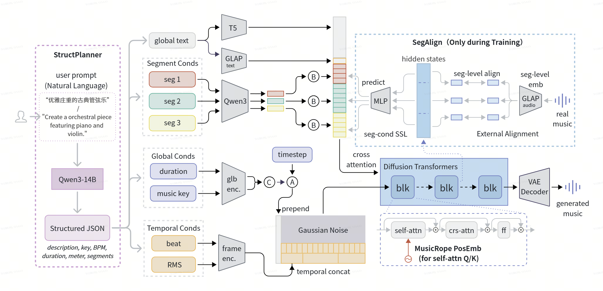
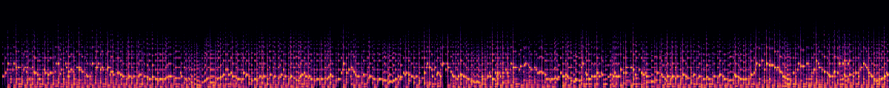
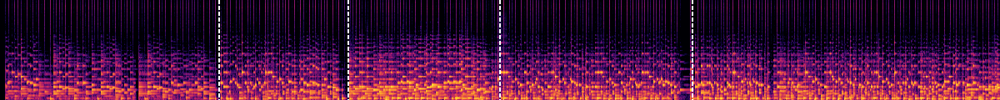
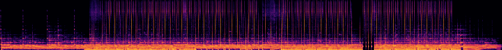
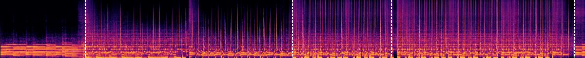
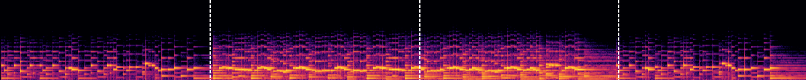
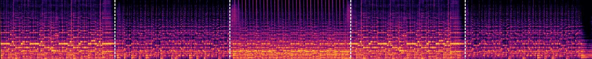
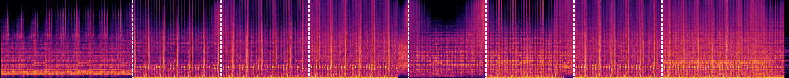

IEEE SLT 2026
MuseGran is a DiT-based latent diffusion system for long-form music generation (up to ~180s, 44.1kHz stereo) with multi-granularity conditioning at global, segment, and frame scales. Key components include: (1) granularity-matched conditioning pathways for text, key, BPM, beat, and per-segment structure; (2) MusicRoPE, a hierarchical position encoding that separately encodes bar, beat, and sequence positions and adds a periodic bar prior for phrase-level recurrence; and (3) SegAlign, a segment-level representation alignment strategy that regularizes musicality while preserving condition semantics. A fine-tuned LLM (StructPlanner) converts free-form user prompts into structured generation specifications.

| Prompt | MusicGen-Large-3.3B ~47s |
MuseControlLite (melody) ~47s |
Stable Audio Open (fine-tuned on our data) ~47s |
MuseGran (Ours) ~120s |
|---|---|---|---|---|
| Country-pop relaxing song with happy mood and acoustic guitar, ideal for young girls going out shopping or dreaming about their love | ||||
| This is a slow but deliberate jazz song, featuring two guitars (one acoustic, one bass), with a bass drum being used in points to keep timing | ||||
| Pop solo piano instrumental song. Simple harmony and emotional theme. Makes you feel nostalgic and wanting a cup of warm tea sitting on the couch | ||||
| An electronic music track which has an upbeat melody, gets increasingly complex and evokes a sense of positive excitement | ||||
| Bluesy guitar with a slow repetitive rhythm in a smoky room in latin america | ||||
| Smooth chill electronic music featuring calming flute and techno beats | ||||
| Rock song starting with guitar line, with a catchy refrain. | ||||
| A hip-hop repetitive beat featuring a keyboards and synths. | ||||
| This song starts with a piano and guitar duet going through an emotional phase and then joined with a dramatic electric guitar. |
Same prompt, key, and beat conditioning. Standard RoPE tends to produce more rigid beats compared to MusicRoPE.
| Prompt | Standard RoPE | MusicRoPE |
|---|---|---|
| Relaxing music played mostly on the piano that can be used while studying, meditating or just relaxing | ||
| In this song, a tropic back-beat and a lush piano chord is then accompanied with a salient organ to give way into a joyful melody and a beat. | ||
| Alternative pop rock that is appealing to the 2010s audience. | ||
| Slow-paced guitar ballad with clean guitar solos interspersed throughout the composition | ||
| 1990s techno with cliche minor key progression and tacky synthetic saxophone lead |
Each conditioning dimension demonstrated independently: tempo, key, duration, and segment-level structure.
Same prompt at different target tempos. Format: input condition → extracted from generated audio.
| Prompt | Case 1 | Case 2 | Case 3 |
|---|---|---|---|
| Peaceful sounding lo-fi, it gives a feeling of security | 75 BPM → 75.0 |
105 BPM → 105.3 |
140 BPM → 139.5 |
| An upbeat and celebratory folk tune with lively instrumentation and a driving rhythm | 75 BPM → 150.0 |
105 BPM → 105.3 |
140 BPM → 139.5 |
* BPM extracted via madmom beat tracker. Octave errors (2× or 0.5×) are a known limitation of beat tracking algorithms and do not indicate incorrect tempo generation.
Same prompt at different target keys. Format: input condition → extracted from generated audio.
| Prompt | Case 1 | Case 2 | Case 3 |
|---|---|---|---|
| Calming instrumental played on bass violin and flute that can be put in the background while doing some work or study | E minor → E minor |
G minor → G minor |
B minor → B minor |
| Ambient electronic music with layered synth textures and atmospheric pads | D major → D major |
F minor → F minor |
F major → F major |
Same prompt at different target durations. The model produces natural endings rather than abrupt cuts.
| Prompt | Case 1 | Case 2 | Case 3 |
|---|---|---|---|
| A vibrant fusion of traditional Middle Eastern and electronic music | ~30s |
~90s |
~180s |
| A relaxing jazz song, for focusing, that evokes sentimental feeling | ~30s |
~90s |
~180s |
Per-segment dynamics and style descriptions control the musical structure over time.
▸ Segment Conditions · 5 seg
Without Segment Control

With Segment Control

▸ Segment Conditions (right) · 5 seg
Without Segment Control

With Segment Control

Play the audio to see real-time segment tracking with spectrogram overlay. Click on the spectrogram to seek. Segment info updates in real-time during playback.
A fine-tuned LLM converts free-form user prompts into full structured specifications, which are then consumed by the generation system. End-to-end examples below.


